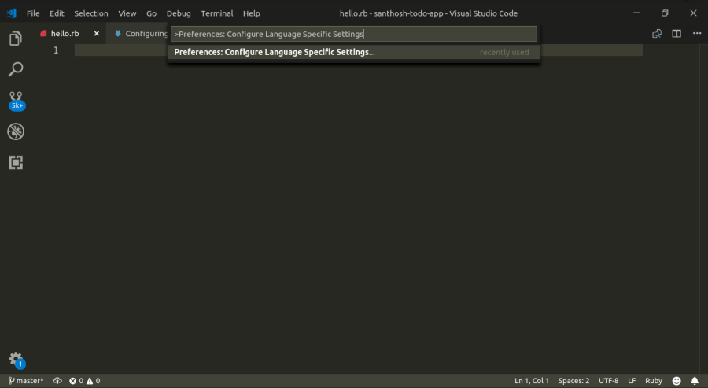
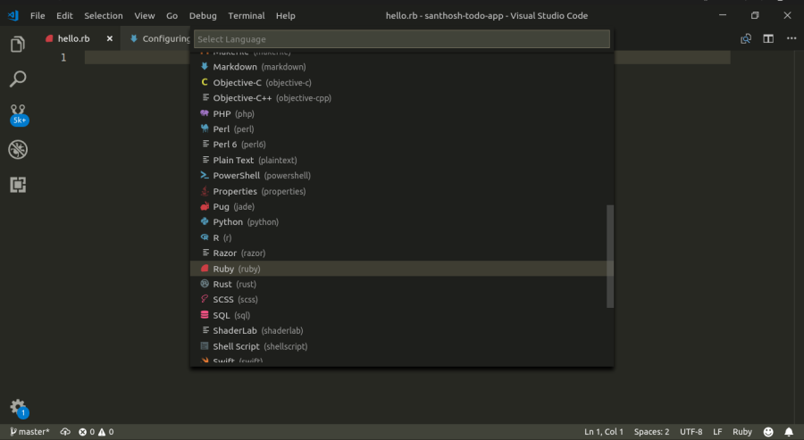
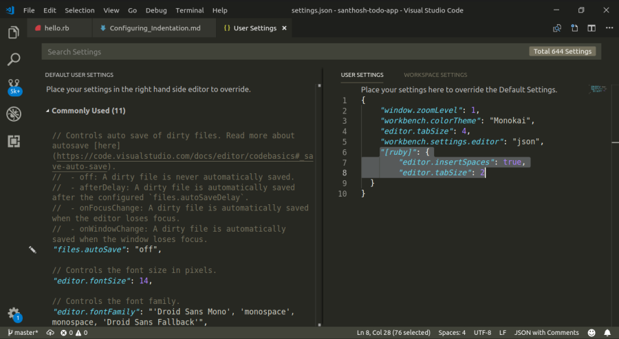

Installing Ruby on Rails & VScode
Installing Ruby on Rails & VScode
0.1 Installing Rails on Mac OS X
Check the version of your operating system. If your version number is 10.9 or higher, follow the next step. If your OS X version is less than 10.9, you should consider upgrading your operating system to 10.9 or higher. It completely free!
Install XCode Command Line Developer Tools.
$ xcode-select --install
Install Homebrew
$ ruby -e "$(curl -fsSL https://raw.githubusercontent.com/Homebrew/install/master/install)"
Install rbenv
$ brew update
$ brew install rbenv
$ echo 'eval "$(rbenv init -)"' >> ~/.bash_profile
$ source ~/.bash_profile
Install Ruby with rbenv
You can install specific Ruby version with rbenv. To find the newest version of Ruby, you can user the command rbenv install -l
$ rbenv install 2.5.1
Set default Ruby
$ rbenv global 2.5.1
Install rails
$ gem install rails --no-document
0.2 Installing Rails on Windows
Download RailsInstaller from railsinstaller.org and run it.
Click through the installer using the default options.
Open Command Prompt with Ruby on Rails, run the following command:
$ rails -v
If you see the following message:
the system cannot find the path specified
This is because the installer cannot correctly setup the path required to run rails. To fix it, we can manually install the rails gem with the following command:
$ gem install rails bundler --no-document
This will re-install rails correctly and rails -v should print the current rails version number.
$ rails -v
Rails 5.2.2
Following are few possible errors that you might face.
- Gem::RemoteFetcher error
When running
rails new myapporgem update railsif you get this error:
Gem::RemoteFetcher::FetchError: SSL_connect returned=1 errno=0 state=SSLv3 read
server certificate B: certificate verify failed (https://rubygems.org/gems/i18n-0.6.11.gem)
You can resolve this by updating the Rubygems. To check you Rubygem version, use command gem -v.
To update it, first download the ruby-gems-update gem from rubygems.org . Move the file to c:\\rubygems-update-2.6.11.gem then run:
$ gem install --local c:\\rubygems-update-2.6.11.gem
$ update_rubygems --no-document
$ gem uninstall rubygems-update -x
Re-Check your version of rubygems. Make sure that your verions number is greater than 2.6.5.
Once it is equal or higher than 2.6.11. Re-run the command that was failing previously.
- ‘x64_mingw’ is not a valid platform Error
When running
rails serversometimes you get the following error :'x64_mingw' is not a valid platformIf you experience this error after using the RailsInstaller you have to do a small edit to the file Gemfile:
At at the bottom of the file, you will probably see something like this as one of the last lines in the file: gem 'tzinfo-data', platforms: [:mingw, :mswin, :x64_mingw]. Delete the :x64_mingw part. In the end it should just say: 'tzinfo-data', platforms: [:mingw, :mswin]
After you did that, in the Command Prompt, run bundle update.
0.3 Installing Rails on Linux
For Ubuntu:
$ sudo apt-get install curl
$ bash < <(curl -sL https://raw.github.com/railsgirls/installation-scripts/master/rails-install-ubuntu.sh)
For Fedora:
$ bash < <(curl -sL https://raw.github.com/railsgirls/installation-scripts/master/rails-install-fedora.sh)
0.4 Configure VSCode
Configure indentation
Visual Studio Code is a text editor that allows you to develop applications for Windows, Mac and Linux. It’s hosted on GitHub and it also supports extensions.
While developing applications in Rails, The indentation for the Ruby code is said to be 2 spaces.The Visual Studio Code editor allows us to configure different identations for different languages we use.
Language specific editor settings
To customize the Visual Studio Code editor by language, we have to run the global command 'Preferences: Configure Language Specific Settings' from the Command Palette(Ctrl+Shift+P).
Preferences: Configure Language Specific Settings


This opens the Language Picker and from the listed languages, select Ruby which then opens up the Settings editor with the language entry where you can add applicable settings. In the user settings json file, add the required settings and save the file.
"[ruby]": {
"editor.insertSpaces": true,
"editor.tabSize": 2
}

The indentation for the language Ruby is now set to 2 spaces.In this way we can configure indentation for any language that we use in our application.In the above user settings file, the default value of indentation is set to '4'. This can be changed to any value according to the user preference.